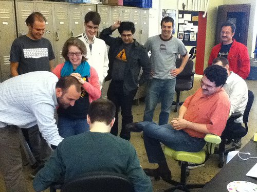

Functional reactive monadic 3D tranformatting robots in Node
Let's write some JavaScript tests
with Pam Selle, @pamasaur, thewebivore.com
Who tests?
‘The report of my death was an exaggeration’
- Testing (also Mark Twain)
Internet fights are dumb

How do you get better at JS?
Write more JS.
Less trivial example (look on GitHub)
Unit testing/Test describers
Test runners
"But Pam, I love testing SO MUCH. How can I test my application like a user would use it"
Yes, there are many kinds of testing.
And we can tell the machines what to do.
How do you enforce testing?
Teach your people to test (ex code retreat)
Code review (must have tests)